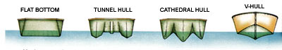
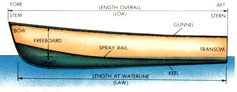
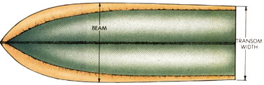

A primer on the language and lore of boating by David Schoonmaker
In 1949, while outfitting themselves to look for oil in the jungles of Guatemala, my father and his partner, E.B. Shade, were shopping for an outboard motor in Guatemala City. In Guatemala at that time, shopping for American items was by brand name-accompanied by a whole lot of gesturing. They went into a sporting goods store and asked the proprietor in their limited Spanish if he had Johnson. The owner replied "no" in Spanish (thinking that they were asking for Johnson & Johnson athletic supplies), but said he had Bauer & Black. Dad answered, "Vamanos a ver." (Let's see!) The shopkeeper returned with a box of first-class athletic supporters.
Chances are good that your initiation into the language of boating won't be quite so difficult. Ask for an outboard and you'll get one. Still, you'll be a lot more likely to obtain a package that suits your needs and finances if you learn to talk nautical. The lingo of the sailor-boatspeak, if you will-is a bunch of fun, and it's also key to joining the clan.
There's a wealth of information contained in the minds of enthusiastic skippers; all you've got to do is ask. You'll find that boat owners enjoy expounding on the merits of their vessels almost as much as they do running them. Visit marinas, boatyards and shops, and ask questions. There you'll learn as much as a person can hope to secondhand.
This article aims to offer enough background to allow you to converse with those who know more. It covers only small powerboats-craft that can be transported by trailer or on a car top-but you'll find that much of the terminology will apply equally well to the larger vessel you may someday own.
Hull Types
On the best of all possible waters, the ideal boat would be fast, stable, dry and able to knife through chop with comfort. On a real lake, river or stream, however, boat design is a compromise. The type of hull that's right for you will depend on what you'll do with the boat and where you plan to do it.
If there's anything approaching an absolute in hull design, it's the distinction between displacement and planing hulls. Viewed from the front (bow), displacement hulls are rounded or shaped in a deep V to push water out of the way, rather than rising onto it, as a planing hull does. Most recreational small powerboats have planing hulls, because skipping along on top of the water allows you to wring more speed from a given amount of power. Displacementhulled powerboats are the province of commercial saltwater fishermen, who value the ability to move smoothly and steadily in big water.
The concept of a displacement hull is still important to the recreational powerboat owner, though, because every boat runs slowly (at hull or displacement speed) at times-when maneuvering in crowded harbors, approaching a dock or preparing to beach, for example. A boat's handling at hull speed-the quickness and predictability of its response to the helm and its resistance to side winds-is a very important aspect of its performance. Don't succumb completely to the thrill of velocity and fail to check out slowspeed manners.
The majority of small powerboats sold today have modified-V hulls. This shape tapers from a fairly steep V at the stem (bow at water line) to practically flat at the stern. The pointed front allows the boat to move water aside at slower speeds, while the squared-off aft (rear) becomes the platform for planing at speed. The flatter bottom aft also adds lateral stability. A boat with a broad, flat bottom is less inclined to rock (sailors say it is less tender or more stiff than a round or V hull. Among other things, however, a flat bottom is slow and rides poorly in waves. Flat bottoms are thus used mainly for small utility craft, called jon boats or punts, which do a fine job of moving the angler or hunter over calm, shallow waters at slow speeds.
As with just about every other niggling detail of boating, naval architects have a unique way of talking about the degree of the V in a hull. Dead rise is the angle that one leg of the V forms with horizontal, measured from the keel (the ridge at the bottom) to the chine (the line above which the hull is rising more or less vertically to the gunnel). On a flatbottom boat, where the chine is hard, dead rise is zero. On modern powerboat hulls, where the chine is soft (rounded) forward and becomes more distinct aft, an average dead rise would be in the 15° to 20° range. In general, a steeper V works best in big waves, while a shallower one planes more quickly and may be faster. A boat for towing waterskiers, for example, would probably have a shallow V, emphasizing acceleration rather than handling in rough seas.
The angle of the stem from vertical also tells you something about a boat's purpose. A plumb (vertical) stem is found on a displacement hull, while one that's raked well back is probably built for speed.
Multihulls
About 10 years ago, the cathedral hull, which has a central V hull and two smaller outrigger V hulls, was all the rage because it offered the lateral stability of a flat bottom without its liabilities. Since then, the design has been extensively refined, producing offshoots such as the twin (or tunnel) hull, while the basic cathedral has been largely abandoned.
Specific design details-the naval architect's expertise-are more important than characteristics common to all multihulled boats, but there are a few generalizations that can be made about them. The total breadth of the bottoms of cathedral and tunnel hulls makes them very stable, provides them with large load capacities, and offers roomy interiors (because of the boats' rectangular shape). What's more, the multiple V hulls slice smoothly through calm water and light chop.
Likewise, there are liabilities to multihulls: First, when they rock at a certain angle, they lose lateral stability quickly and are inclined to roll upside down (turn turtle). (A V hull will rock more easily initially but will increasingly resist the motion.) Second, the shape offers more surface (wetted) area to the water and so tends to be slower than a modified V. Third, because they lean very little into a corner, flat hulls have wider turning radii at speed. And fourth, they pitch (rock fore and aft) and ride harshly in heavy seas. The mix of advantages and disadvantages of cathedral and tunnel hulls makes them particularly popular with people who enjoy inland and coastal fishing.
Hull Materials
Boats are made out of wood, steel, aluminum, fiber-reinforced plastic (fiberglass) and even cement, but the majority of small powerboats being built today are either aluminum or fiberglass. Both materials are suitable for fresh water, but in salt water, aluminum requires more attention to protect it from electrolytic reactions and corrosion. Some sailors find that fiberglass requires slightly less maintenance in fresh water, as well, and it is somewhat more resistant to damage from gentle collisions. It's also unquestionably easier to repair fiberglass once the damage is done.
In general, you'll find that simpler and smaller hull forms are likely to be made from aluminum, which has good stiffness, while the more exotic shapes of sporty runabouts are easier to mold in fiberglass.
Power
Power systems for small boats nowadays are almost exclusively outboard or inboard-outboard-where the engine is against the inside of the transom (the back of the hull), and the propeller is mounted on a steerable column resembling the lower section of an outboard. Strictly inboard power systems are rare on boats shorter than 20' . Inboards don't trailer well, because the propeller shaft and propeller are fixed to the bottom of the hull; they are less responsive to the helm, because the propeller doesn't change its direction of thrust; and the motor has to be mounted somewhere near midships, taking up valuable passenger space.
With a few exceptions, small-boat motors operate in two cycles, in which there is combustion each time the piston rises. (By contrast, gasoline automobile engines are four-cycle, firing every other time the piston rises.) Two-cycle engines are lighter and mechanically less complex than the fourcycle variety, but they require that oil be mixed in the gasoline for lubrication.
If your association with two-cycle engines is limited to balky chain saws and smoky motorcycles, modern outboard motors are likely to surprise you. In the past two decades, they've advanced tremendously in everyday manners and reliability. Except for units with less than 10 horsepower, outboards typically have multiple cylinders for smoothness, water cooling for reliability, oil injection to preclude hand mixing of oil and gas, and, on larger models, amenities such as electric starting, electronic ignition, power steering and power trim to adjust the boat's attitude for best performance. At the upper, hot-rod end of the scale, there are 600-pound, V-8 outboards that displace 4,000 cubic centimeters (244 cubic inches) and produce 300 horsepower.
In years past, outboards got the nod to inboard-outboards on price, but recently that difference has largely disappeared. In part, this is because of changes in the way boat and motor companies are doing business. The trend today is toward boat-and-motor packages designed for each other and sold under the same name. Boats that start on the design tables as inboard-outboards, and which are manufactured under the same corporate umbrella as their power plants, are quite costcompetitive with mix-and-match boat-motor combinations.
Very briefly, the main advantages offered by an inboard-outboard configuration are better weight distribution (since the motor is inside the hull and down low), protection of the motor from the elements, and cleaner visual lines. The outboard takes up no room inside the boat, however, and is much easier to upgrade to higher power at a later date.
Power Requirements
Most recommendations concerning the size of motor for a boat are directed at how much weight and power the craft can stand, not how much is ideal. The former concern has to do with safety and speed, while the latter is a matter of economy and personal need. Make no mistake, though, an underpowered boat can be nearly as dangerous as an overpowered one if you get caught in heavy currents, powerful seas or strong winds.
Every boat built since October 31, 1972, should have a metal plaque listing maximum load and power capacities. These figures are derived from a formula that calculates hull displacement by multiplying the length at water line by the width of the transom. The formula doesn't take into consideration the design of the hull, and there may be boats that can safely handle more power than recommended, but it does provide a good rule of thumb.
The chart "Horsepower Capacity" shows what powers can be used according to the displacement factor, but there are a number of modifications that may have to be made to the numbers.
First, if yours is a flat-bottom boat, such as a jon boat, with a displacement factor of less than 52, move back one horsepower category. Thus if you have a 10'-long jon boat with a 4'-wide transom, the displacement factor is 40, but you must move down into the 36-39 category and use a 5 hp motor.
Second, if your boat has a displacement factor greater than 52, has remote steering (which balances the boat better), and has a transom height of at least 20", double your displacement factor and subtract 90 to arrive at the horsepower. For example, an 18' runabout with a 6' transom has a displacement factor of 108, which, when doubled, equals 216. Subtract 90, and you arrive at a maximum horsepower rating of 126, which can be rounded up to 130 hp.
To complicate matters further, for a boat with a displacement factor greater than 52 but without remote steering or a 20" high transom, multiply the displacement factor by 0.8 and subtract 25-unless it has a flat bottom, in which case you multiply by 0.5 and subtract 15 to find the maximum horsepower rating.
Obviously, a boat with the largest possible motor may not be the most economical. For a general-purpose planing runabout, an ideal motor will maintain a reasonable speed-say 20 to 30 mph-at around two-thirds of the engine's maximum rpm. The 3,500 to 4,000 rpm range is usually most fuel efficient, avoids undue stress and maintains a reserve of power.
To illustrate how important this can be, a motor run at full throttle, rather than two-thirds, may use twice as much fuel and gain only 10 mph in top speed. Twice as much fuel in even a medium-large 100 hp motor may mean a drop from 6 mpg to 3 mpg. (Fuel consumption of really big outboards is measured in gallons per mile.)
Another question to be answered by the person looking for a boat with 100 or more horsepower is whether to use one engine or two. There are many factors to consider, but here are a few of the most important. Two engines not only cost more to buy than one, they use roughly half again as much fuel as a single of equivalent total horsepower. With two engines, one can be shut off when fishing at trolling speeds. (Many inland fishermen outfit their boats with a single large motor for getting to the spot and a tiny, quiet electric trolling motor for moving around while there.) Twin motors can be had with counter-rotating props, to counteract the twisting force of a single prop and provide better handling. Twin motors also provide an extra margin of reliability, though today's outboards are generally very trustworthy.
Boating has become a bit more involved, but a lot more satisfying, since my father and his buddy ventured onto the rivers of Central America. As soon as they managed to acquire a 10 hp Johnson and bolt it to a canoe, they spent a day shearing the entire region's supply of the pins that secure the propeller to the engine, and returned to poling and paddling their way down the jungle freeways. It wasn't what you'd call an unqualified nautical success.
Nonetheless, it was a learning experience. If you happen to be looking for an outboard motor in a Spanish-speaking country, you might ask for a motor de bote -and be sure to gesture a lot.
David Schoonmaker is a senior editor for Mother Earth News. He wasn't around to witness his father's escapades in Guatemala, but the two of them have spent considerable time since then boating on salt and fresh water.
|
SIDE VIEW |
 |
 |
|
 |
|
|